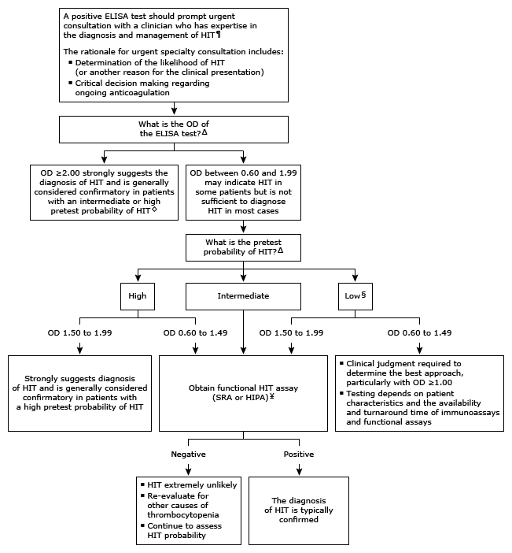

Initial evaluation of positive ELISA PF4-heparin antibody in adults*

This algorithm is intended for use with additional UpToDate content on HIT.
ELISA: enzyme-linked immunosorbent assay; PF4: platelet factor 4; HIT: heparin-induced thrombocytopenia; OD: optical density; SRA: serotonin release assay; HIPA: heparin-induced platelet activation; IgG: immunoglobulin G. * Immunoassays (eg, heparin-PF4 IgG ELISA) detect heparin-induced antibodies. A normal result is negative, based on a predetermined OD cut-off value. There is variability among different immunoassays in terms of sensitivity, specificity, and predictive value. There is no universally agreed upon OD value that can be labeled as "positive." The numeric thresholds in this algorithm provide general guidance. Interpretation of a specific abnormal result should be based on the reference range reported for that result. ¶ A presumptive diagnosis of HIT is based on the pretest probability of HIT (eg, 4 Ts score) supported by laboratory testing for PF4-heparin antibodies (immunoassays and functional assays). In most centers, an ELISA is ordered first. Some centers may follow a different protocol. Patients with renal failure or those who have undergone cardiopulmonary bypass have a high incidence of heparin-induced antibodies with unclear clinical significance. In this particular setting, the diagnosis of HIT is even more challenging and requires specialty expertise. Δ The likelihood of HIT is greater with a higher pretest probability (eg, 4 Ts score) and with a high OD on the ELISA PF4-heparin antibody. ◊ Laboratory testing for HIT is not recommended for patients with a low pretest probability of HIT. If an ELISA was obtained and the OD is >2.00 in an individual with a low pretest probability, obtain a functional study. Some centers may favor the use of functional assays in all patients, even those with an ELISA OD ≥2.00. § Laboratory testing for HIT is not recommended when pretest probability is low. ¥ The antiplatelet agent ticagrelor may interfere with functional assays for HIT, making it appear that the test is negative when in fact HIT is present.